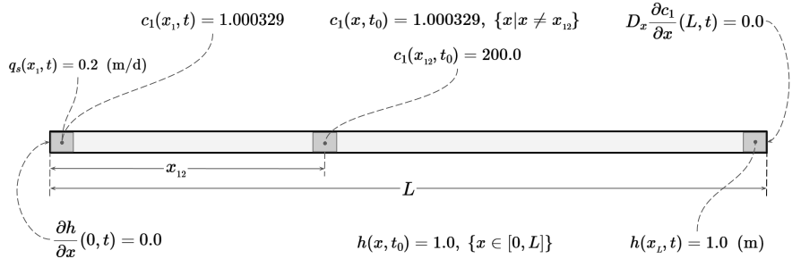
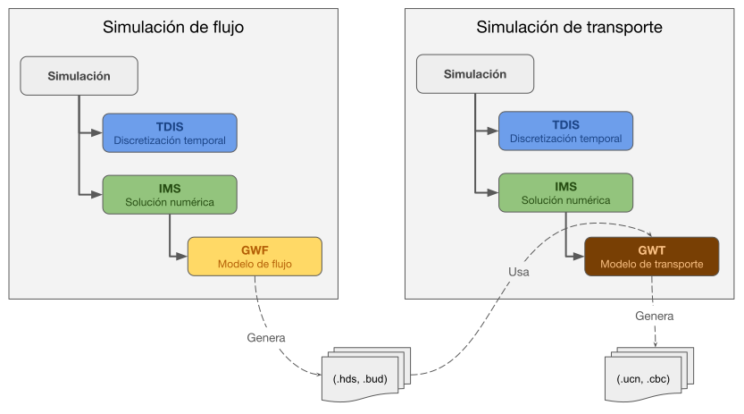
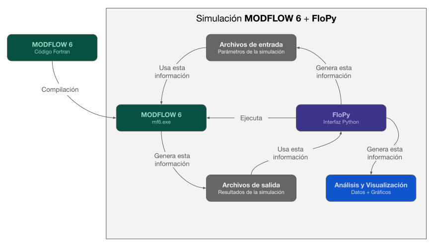
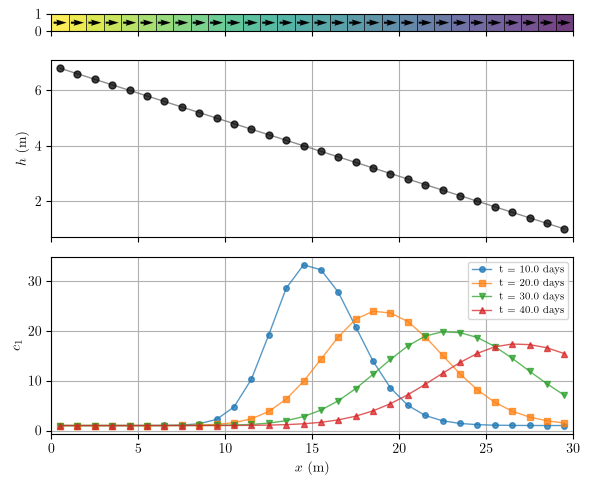
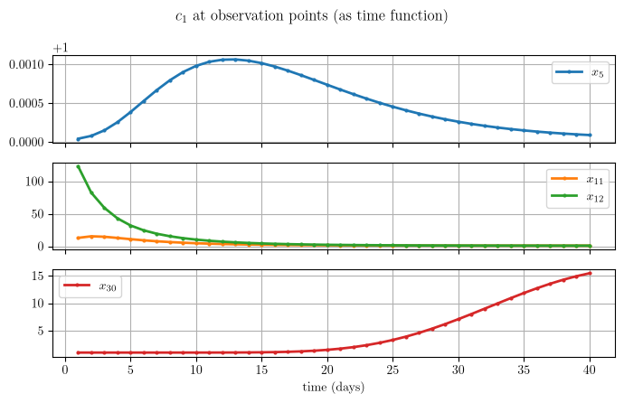

Código
import os
import json
import numpy as np
import matplotlib.pyplot as plt
import flopy
import xmf6Descripción.
En esta notebook se plantea el problema de flujo de agua subterránea y transporte conservativo de la especie química \(c_1= SO_4^{2-}\) y se resuelve usando MODFLOW 6 (GWF y GWT) en combinación de las herramientas de FloPy.
RTWMA © 2024-2026 by IGF-UNAM is licensed under CC BY-NC 4.0


El dominio es una columna 1D de longitud \(L = 30 \text{ (m)}\), en dirección \(x\), representando un acuífero de espesor y ancho unitarios, véase figura 1.

Sobre este dominio ocurren dos procesos acoplados:
El campo de flujo (carga \(h\) y velocidad \(v\)) controla el transporte, pero el soluto no modifica la densidad ni la viscosidad del agua.
El problema se va a resolver en un periodo de \(40\) días, con un paso de tiempo constante de \(1\) día (\(40\) pasos de tiempo).
Para un acuífero 1D, confinado, con conductividad hidráulica \(K_x\) y coeficiente de almacenamiento específico \(S_s\), la ecuación de flujo es:
\[ S_s \frac{\partial h}{\partial t} = \frac{\partial}{\partial x} \left( K_x \frac{\partial h}{\partial x} \right) + q_s(x,t) \]
donde \(q_s(x,t)\) representa fuentes o sumideros volumétricos de agua por unidad de volumen (p. ej. un pozo).
NOTA.
En MODFLOW 6 se utiliza \(Q^\prime_s\) para representar el flujo volumétrico por unidad de volumen en una fuente o sumidero y \(SS\) para representar el almacenamiento específico. En este documento usaremos \(q_s\) y \(S_s\) para dichas cantidades respectivamente.
Condiciones de frontera:
\[ \left.\frac{\partial h}{\partial x}\right|_{(0,t)} = 0 \qquad\text{(frontera cerrada / flujo nulo en } x=0\text{)} \]
\[ h(x_{_{L}}, t) = 1.0 \qquad\text{(carga fija en el extremo } x=x_{_{L}}\text{)} \]
Condición inicial:
\[ h(x,t_0) = 1.0 \qquad\text{(m)} \]
Para la especie \(c_1\), con porosidad \(\theta\), coeficiente de dispersión hidrodinámica \(D_{xx}\) y descarga específica \(q_x\) la ecuación de transporte se escribe como:
\[ - \frac{\partial (\theta c_1)}{\partial t} - \frac{\partial (q_x c_1)}{\partial x} + \frac{\partial}{\partial x}\left(\theta D_{xx} \frac{\partial c_1}{\partial x}\right) + q_s c_s = 0 \]
con \(D_{xx} = \alpha_L |v_x| + D^{*}\) (\(\alpha_L\): dispersividad longitudinal, \(D^{*}\): difusión molecular efectiva), $v_x = q_x / $ (\(v_x\): velocidad de poro de flujo de agua) y \(c_s\) es la concentración volumétrica de soluto en la fuente/sumidero.
Condiciones de frontera:
\[ c_1(x_{_{1}}, t) = 1.000329 \qquad\text{(concentración fija en } x=x_{_{1}}) \]
\[ D_x \left.\frac{\partial c_1}{\partial x}\right|_{(L,t)} = 0 \qquad\text{(flujo dispersivo nulo en la salida } x=L ) \]
Condición inicial:
\[ c_1(x,t_0) = 1.000329 \quad \forall\, x \neq x_{_{12}} \] \[ c_1(x_{_{12}}, t_0) = 200.0 \]
En el instante inicial la concentración es igual a un valor de \(1.000329\) en todo el dominio, excepto en el punto \(x_{_{12}}\) donde existe un valor en dicha celda de \(200.0\) que representa una masa de soluto ya presente en el medio (p. ej. un derrame o inyección previa) que a partir de \(t_0\) comenzará a migrar y dispersarse bajo la acción del flujo.
Para realizar una simulación en MODFLOW 6, de flujo o de transporte, se requiere generar una estructura como la que se muestra en la figura 2. Dado que esta versión del software es orientada a objetos, cada bloque que se muestra en la figura corresponde a un objeto, con sus propios métodos y atributos. Obsérvese que las simulaciones, en este caso, se realizan de manera separada, es decir, primero se calcula el flujo generando archivos de salida (.hds, .bud) y posteriormente se simula el transporte utilizando la información del flujo previamente calculada.

La solución numérica se realiza con MODFLOW 6 usando las herramientas que provee la bibliteca FloPy. Es importante notar que FloPy es una biblioteca que permite 1) generar los archivos de entrada para una simulación, 2) realizar la simulación ejecutando el código compilado de Fortran de MODFLOW 6 y finalmente 3) analizar y visualizar los resultados de la simulación. La figura 3 muestra este proceso.

El primer paso es importar las bibliotecas necesarias para realizar la simulación:
import os
import json
import numpy as np
import matplotlib.pyplot as plt
import flopy
import xmf6Definimos un diccionario con información de la ruta al ejecutable de MODFLOW y con los nombres de los modelos de flujo y transporte así como los directorios del espacio de trabajo.
# Variables de entorno
with open('../env.json', 'r', encoding='utf-8') as file:
env = json.load(file)
env["ROOT_DIR"] = os.getcwd() # Agregamos el dir raíz
xmf6.nice_print("Environment variables", env)
paths = dict(
# Ejecutable de MODFLOW 6
mf6_exe = env["MF6EXE"],
#
# Nombre de los modelos y espacios de trabajo
flow_name = "flow",
flow_ws = "io_mf6/c1/gwf",
tran_name = "transport",
tran_ws = "io_mf6/c1/gwt"
)
xmf6.nice_print("Paths, files and more ...", paths)Environment variables ――――――――――――――――――――― MF6EXE = C:/Users/luiggi/Documents/GitSites/mf6_tutorial/mf6/windows/mf6 MF6DLL = C:/Users/luiggi/Documents/GitSites/mf6_tutorial/mf6/windows/libmf6.dll RT_BINARIES = C:/Users/luiggi/Documents/GitSites/RTWMA/benchmarks/00_RT_EXE/bin ROOT_DIR = C:\Users\luiggi\Documents\GitSites\RTWMA\benchmarks\01_CT_gypsum_1D ――――――――――――――――――――― Paths, files and more ... ――――――――――――――――――――――――― mf6_exe = C:/Users/luiggi/Documents/GitSites/mf6_tutorial/mf6/windows/mf6 flow_name = flow flow_ws = io_mf6/c1/gwf tran_name = transport tran_ws = io_mf6/c1/gwt ―――――――――――――――――――――――――
El dominio se discretiza en \(30\) celdas equiespaciadas como se muestra en la figura 4.

La siguiente tabla muestra los valores para la discretización espacial definidos en términos de la notación de MODFLOW 6 y FloPy. La columna Variable indica la(s) variable(s) donde se almacena cada valor en la implementación.
| Parámetro | Valor | Unidades | Variable |
|---|---|---|---|
| Length of system (rows) | \(30.0\) | m | |
| Number of layers | \(1\) | dis["nlay"] |
|
| Number of rows | \(1\) | dis["nrow"] |
|
| Number of columns | \(30\) | dis["ncol"] |
|
| Column width | \(1.0\) | m | dis["delr"] |
| Row width | \(1.0\) | m | dis["delc"] |
| Top of the model | \(1.0\) | m | dis["top"] |
| Layer bottom elevation (cm) | \(0\) | m | dis["botm"] |
# Discretización espacial
nlay = 1
nrow = 1
ncol = 30
delr = 1.0
delc = 1.0
top = 1.0
botm = 0.0
dis = {
'units' : "meters",
'nlay': nlay,
'nrow': nrow,
'ncol': ncol,
'delr': delr,
'delc': delc,
'top' : top,
'botm': botm
}
xmf6.nice_print("Spatial discretization", dis)Spatial discretization ―――――――――――――――――――――― units = meters nlay = 1 nrow = 1 ncol = 30 delr = 1.0 delc = 1.0 top = 1.0 botm = 0.0 ――――――――――――――――――――――
Como se mencionó en el planteamiento del problema, se va a resolver en un periodo de \(40\) días con un paso de tiempo constante de \(1\) día (\(40\) pasos de tiempo). Sin embargo, debido a que el flujo se mantiene constante durante toda la simulación, se utiliza un solo paso de tiempo de \(40\) días para resolver el flujo.
| Parámetro | Valor | Unidades | Variable |
|---|---|---|---|
| Number of stress periods (NPER) | \(1\) | tdis["nper"] |
|
| Total time | \(40\) | days | tdis["perioddata"][0][0] |
| Number of time steps (NSTP) | \(1\) | tdis["perioddata"][0][1] |
|
| Multiplier (TSMULT) | \(1\) | tdis["perioddata"][0][2] |
NOTA.
El valor del parámetro NSTP será cambiado a \(40\) cuando se resuelva el transporte.
# Discretización del tiempo para el flujo
tdis = {
'units': "days",
'nper' : 1,
'perioddata': [(40.0, 1, 1.0)] #PERLEN, NSTP, TSMULT
}
xmf6.nice_print("Time discretization (flow)", tdis)Time discretization (flow) ―――――――――――――――――――――――――― units = days nper = 1 perioddata = ―― data array ―― = (40.0, 1, 1.0) ――――――――――――――――――――――――――
Para resolver el problema necesitamos definir varios parámetros físicos. Para ello tomaremos en cuenta que el flujo es estacionario, por lo que solo se resuelve una vez en el lapso de \(40\) días, esto implica además que no se requiere definir el coeficiente de almacenamiento específico \(S_s\). Recordemos que en la celda \(1\) se agrega un pozo de inyección, que es coherente con el hecho de que ahí se especifica una descarga específica \(q_s\) y una concentración de entrada \(c_s = c_1(x_{_{1}},t)=1.000329\), esto representa el agua que ingresa al sistema y empuja el soluto hacia \(x_{_{L}}\). Las condiciones iniciales y de frontera se describen en la figura 1. En la siguiente tabla se describen todos los parámetros requeridos, comenzando primero con los de flujo y posteriormente con los de transporte.
| Parámetro | Símbolo | Valor | Unidades | Variable |
|---|---|---|---|---|
| Initial head | \(h(x, t_0)\) | \(1.0\) | m | phys["initial_head"] |
| Head boundary condition (type I) | \(h({x_{_{L}}, t})\) | \(1.0\) | m | phys["bc_head_t1"] |
| Hydraulic conductivity | \(K_x\) | \(1.0\) | m d\(^{-1}\) | phys["hydraulic_conductivity"] |
| Specific discharge | \(q_s\) | \(0.2\) | m d\(^{-1}\) | phys["specific_discharge"] |
| Source concentration | \(c_s\) | \(1.0000329\) | unitless | phys["source_concentration"][0] |
| Well inyection | \(q_s c_s\) | – | m d\(^{-1}\) | phys["well"] |
| Porosity | \(\theta\) | \(0.5\) | unitless | phys["porosity"] |
| Initial concentration | \(c_1(x, t_0)\) | \(1.0000329\) | unitless | phys["initial_concentration"] |
| Initial concentration pulse | \(c_1(x_{_{12}}, t_0)\) | \(200.0\) | unitless | phys["initial_concentration"][11] |
| Concentration boundary condition (type I) | \(c_1(x_{_{1}}, t)\) | \(1.0000329\) | unitless | phys["bc_conc_t1"][0] |
| Longitudinal Dispersivity | \(\alpha_L\) | \(0.5\) | m | phys["longitudinal_dispersivity"] |
| Dispersion coefficient | \(D_{xx}\) | \(1.0\) | m\(^{2}\) d\(^{-1}\) | phys["dispersion_coefficient"] |
# Arreglo para la condición inicial
c1_ini = np.full((nlay,nrow,ncol), 1.0000329) # En todo el dominio
c1_ini[0, 0, 11] = 200.0 # Pulso en x_L
xmf6.nice_print("Array info: c1")
xmf6.info_array(c1_ini)
phys = dict(
initial_head = 1.0,
bc_head_t1 = [("CHD-1" , [(0, 0, dis['ncol'] - 1), 1.0])],
hydraulic_conductivity = 1.0,
specific_discharge = 0.2,
source_concentration = 1.0000329,
porosity = 0.5,
initial_concentration = c1_ini,
bc_conc_t1 = [("CNC-1", [(0, 0, 0), 1.0000329])],
longitudinal_dispersivity = 0.5, # 0.2 o 0.5?
dispersion_coefficient = 1.0
)
# Agregamos la información del pozo
q = phys["specific_discharge"] * dis['delc'] * dis['delr'] * dis['top']
phys["well"] = [("WEL-1", "AUX", "CONCENTRATION"), ((0, 0, 0), q, phys["source_concentration"])]
xmf6.nice_print("Physical parameters", phys)Array info: c1 ―――――――――――――― tipo : <class 'numpy.ndarray'> dtype : float64 dim : 3 shape : (1, 1, 30) size(bytes) : 8 size(elements) : 30 Physical parameters ――――――――――――――――――― initial_head = 1.0 bc_head_t1 = ―― data array ―― = ('CHD-1', [(0, 0, 29), 1.0]) hydraulic_conductivity = 1.0 specific_discharge = 0.2 source_concentration = 1.0000329 porosity = 0.5 initial_concentration = ―― data array ―― = [[ 1.0000329 1.0000329 1.0000329 1.0000329 1.0000329 1.0000329 1.0000329 1.0000329 1.0000329 1.0000329 1.0000329 200. 1.0000329 1.0000329 1.0000329 1.0000329 1.0000329 1.0000329 1.0000329 1.0000329 1.0000329 1.0000329 1.0000329 1.0000329 1.0000329 1.0000329 1.0000329 1.0000329 1.0000329 1.0000329]] bc_conc_t1 = ―― data array ―― = ('CNC-1', [(0, 0, 0), 1.0000329]) longitudinal_dispersivity = 0.5 dispersion_coefficient = 1.0 well = ―― data array ―― = ('WEL-1', 'AUX', 'CONCENTRATION') = ((0, 0, 0), 0.2, 1.0000329) ―――――――――――――――――――
Para realizar una simulación de flujo con GWF de MODFLOW 6 se requiere construir una estructura como la que se muestra en la figura 2. Dicha estructura se construye usando FloPy con las clases flopy.mf6.MFSimulation, flopy.mf6.ModflowTdis, flopy.mf6.ModflowIms y flopy.mf6.ModflowGwf. A partir de estas clases se crean objetos con los atributos requeridos por la simulación. En la siguiente celda se realiza esta implementación:
# Creación del objeto de la simulación de flujo
o_sim = flopy.mf6.MFSimulation(
sim_name = paths["flow_name"],
sim_ws = paths["flow_ws"],
exe_name = paths["mf6_exe"],
version="mf6"
)
# Creación del objeto de la discretización del tiempo
o_tdis = flopy.mf6.ModflowTdis(
o_sim,
time_units = tdis["units"],
nper = tdis["nper"],
perioddata = tdis["perioddata"],
)
# Creación del objeto de la solución del sistema lineal
o_ims = flopy.mf6.ModflowIms(
o_sim
)
# Creación del objeto del modelo de flujo
o_gwf = flopy.mf6.ModflowGwf(
o_sim,
modelname = paths["flow_name"],
save_flows = True
)Para resolver el problema de flujo antes planteado se requiere de agregar paquetes al modelo que está representado por el objeto o_gwf. En este caso requerimos los siguientes paquetes:
DIS: Discretización espacial de tipo estructurada.NPF: Propiedades del flujo, particularmente la conductividad hidráulica \(K_x\).IC: Definición de las condiciones iniciales de la carga hidráulica.CHD: Condición de frontera de carga hidráulica fija \(h(x_{_{L}},t)=1.0\).WEL: Pozo de inyección de \(q_s c_s\) en \(x_{_{1}}\).OC : Definición de los archivos para almacenar los resultados de la simulación.STO debido a que el flujo se resuelve en régimen permanente.# Agregamos el paquete DIS para la discretización espacial estructurada
o_dis = flopy.mf6.ModflowGwfdis(
o_gwf,
nlay = dis["nlay"],
nrow = dis["nrow"],
ncol = dis["ncol"],
delr = dis["delr"],
delc = dis["delc"],
top = dis["top"],
botm = dis["botm"],
)
# Agregamos el paquete NPF para las prop. del flujo
o_npf = flopy.mf6.ModflowGwfnpf(
o_gwf,
k = phys["hydraulic_conductivity"],
icelltype=0,
save_specific_discharge = True,
save_saturation=True
)
# Agregamos el paquete IC para las condiciones iniciales
o_ic = flopy.mf6.ModflowGwfic(
o_gwf,
strt = phys["initial_head"]
)
# Agregamos el paquete CHD para definir la carga fija (condición de frontera)
o_chd = flopy.mf6.ModflowGwfchd(
o_gwf,
stress_period_data = [phys["bc_head_t1"][0][1],],
pname = phys["bc_head_t1"][0][0],
)
# Agregamos el paquete WEL para definir un pozo de inyección
# Pozo de inyeccion en x1 (con concentracion auxiliar para el acople con GWT)
o_wel = flopy.mf6.ModflowGwfwel(
o_gwf,
stress_period_data = [phys["well"][1],],
auxiliary = [phys["well"][0][2]],
pname = phys["well"][0][0],
)
# Agregamos el paquete OC para almacenar la salida
oc_gwf = flopy.mf6.ModflowGwfoc(
o_gwf,
head_filerecord=f"{paths["flow_name"]}.hds",
budget_filerecord=f"{paths["flow_name"]}.bud",
saverecord=[("HEAD", "ALL"), ("BUDGET", "ALL")],
)# Escritura de los archivos de entrada para la simulación de flujo
o_sim.write_simulation(silent = False)
# Ejecución de la simulación de flujo.
o_sim.run_simulation(silent = False)writing simulation...
writing simulation name file...
writing simulation tdis package...
writing solution package ims_-1...
writing model flow...
writing model name file...
writing package dis...
writing package npf...
writing package ic...
writing package chd-1...
INFORMATION: maxbound in ('', 'chd', 'dimensions') changed to 1 based on size of stress_period_data
writing package wel-1...
INFORMATION: maxbound in ('', 'wel', 'dimensions') changed to 1 based on size of stress_period_data
writing package oc...
FloPy is using the following executable to run the model: ..\..\..\..\..\..\mf6_tutorial\mf6\windows\mf6.exe
MODFLOW 6
U.S. GEOLOGICAL SURVEY MODULAR HYDROLOGIC MODEL
VERSION 6.6.1 02/10/2025
MODFLOW 6 compiled Feb 10 2025 17:37:25 with Intel(R) Fortran Intel(R) 64
Compiler Classic for applications running on Intel(R) 64, Version 2021.7.0
Build 20220726_000000
This software has been approved for release by the U.S. Geological
Survey (USGS). Although the software has been subjected to rigorous
review, the USGS reserves the right to update the software as needed
pursuant to further analysis and review. No warranty, expressed or
implied, is made by the USGS or the U.S. Government as to the
functionality of the software and related material nor shall the
fact of release constitute any such warranty. Furthermore, the
software is released on condition that neither the USGS nor the U.S.
Government shall be held liable for any damages resulting from its
authorized or unauthorized use. Also refer to the USGS Water
Resources Software User Rights Notice for complete use, copyright,
and distribution information.
MODFLOW runs in SEQUENTIAL mode
Run start date and time (yyyy/mm/dd hh:mm:ss): 2026/08/03 16:19:43
Writing simulation list file: mfsim.lst
Using Simulation name file: mfsim.nam
Solving: Stress period: 1 Time step: 1
Run end date and time (yyyy/mm/dd hh:mm:ss): 2026/08/03 16:19:43
Elapsed run time: 0.400 Seconds
Normal termination of simulation.(True, [])Los resultados de la simulación de flujo quedan almacenados en archivos con extensión .hds y .bud que están en formato binario. FloPy ofrece herramientas para extraer esta información y visualizarla. La biblioteca xmf6 encapsula estas herramientas en funciones que permite un uso más simple. A continuación extraemos la información de la carga hidráulica \(h\) y de la descarga específica \(q\).
# Objeto para acceder a los resultados de la carga hidráulica.
o_head = o_gwf.output.head()
# Tiempos calculados para el flujo.
times_h = np.array(o_head.get_times())
# Recuperamos la carga hidráulica del paso 40.
head = o_head.get_data(totim=40)[0, 0, :]
# Objeto para acceder a los resultados de la descarga específica.
budget = o_gwf.output.budget()
# Recuperamos la descarga específica del paso 40.
spdis = budget.get_data(totim=40, text="DATA-SPDIS")[0]
qx, qy, qz = flopy.utils.postprocessing.get_specific_discharge(spdis, o_gwf)
# Recuperamos las coordenadas de los centros de las celdas de la malla
x, y, z = o_gwf.modelgrid.xyzcellcenters
# Diccionario para imprimir la información en pantalla
flow_dict = dict(
xcoord = x,
times = [times_h],
head = [head],
qx = qx[:,0],
)
xmf6.nice_print("Head", flow_dict)Head ―――― xcoord = ―― data array ―― = [ 0.5 1.5 2.5 3.5 4.5 5.5 6.5 7.5 8.5 9.5 10.5 11.5 12.5 13.5 14.5 15.5 16.5 17.5 18.5 19.5 20.5 21.5 22.5 23.5 24.5 25.5 26.5 27.5 28.5 29.5] times = ―― data array ―― = [40.] head = ―― data array ―― = [6.8 6.6 6.4 6.2 6. 5.8 5.6 5.4 5.2 5. 4.8 4.6 4.4 4.2 4. 3.8 3.6 3.4 3.2 3. 2.8 2.6 2.4 2.2 2. 1.8 1.6 1.4 1.2 1. ] qx = ―― data array ―― = [0.2 0.2 0.2 0.2 0.2 0.2 0.2 0.2 0.2 0.2 0.2 0.2 0.2 0.2 0.2 0.2 0.2 0.2 0.2 0.2 0.2 0.2 0.2 0.2 0.2 0.2 0.2 0.2 0.2 0.2] ――――
De igual manera que en el caso del flujo, para realizar la simulación del transporte conservativo se debe construir una estructura similar a la mostrada en la figura 2. Debido a que esta es una simulación separada de la del flujo, reutilizaremos algunos objetos con atributos diferentes. Comenzamos con la discretización del tiempo; en este caso se realizan \(40\) pasos de un día cada uno, entonces el diccionario tdis lo modificamos como sigue:
# Discretización del tiempo para el transporte
tdis = {
'units': "days",
'nper' : 1,
'perioddata': [(40.0, 40, 1.0)] #PERLEN, NSTP, TSMULT
}
xmf6.nice_print("Time discretization (transport)", tdis)Time discretization (transport) ――――――――――――――――――――――――――――――― units = days nper = 1 perioddata = ―― data array ―― = (40.0, 40, 1.0) ―――――――――――――――――――――――――――――――
Entonces la estructura inicial de la simulación se realiza como sigue:
# Creación del objeto de la simulación de flujo
o_sim = flopy.mf6.MFSimulation(
sim_name = paths["tran_name"],
sim_ws = paths["tran_ws"],
exe_name = paths["mf6_exe"],
version="mf6"
)
# Creación del objeto de la discretización del tiempo
# OJO: aquí cambio el número de pasos de simulación.
o_tdis = flopy.mf6.ModflowTdis(
o_sim,
time_units = tdis["units"],
nper = tdis["nper"],
perioddata = tdis["perioddata"],
)
# Creación del objeto de la solución del sistema lineal
# En este caso se requiere de un "solver" para sistemas no simétricos
o_ims = flopy.mf6.ModflowIms(
o_sim,
complexity="SIMPLE",
linear_acceleration="BICGSTAB",
outer_dvclose=1e-8,
inner_dvclose=1e-8,
)
# Creación del objeto del modelo de transporte
o_gwt = flopy.mf6.ModflowGwt(
o_sim,
modelname = paths["tran_name"],
save_flows = True
)Para resolver el problema de transporte se requiere agregar paquetes al modelo que está representado por el objeto o_gwt. En este caso se necesita de lo siguiente:
DIS: Discretización espacial de tipo estructurada. Se usa la misma que se usó para el flujo.IC: Condición inicial \(c_1(x,t_0)\) que consiste en un valor constante en todo el dominio y el pulso puntual en \(x_{_{12}}\).ADV : Advección con el esquema TVD.DSP : Dispersión, se define el coeficiente \(\alpha_L\) (dispersión longitudinal) .MST: Se define la porosidad \(\theta\).CNC: Condición de frontera de concentración fija \(c_1(x_{_{1}},t)=1.000329\).CNC: MODFLOW 6 aplica de forma natural un gradiente dispersivo nulo en la celda de salida, es decir \(D_x\,\partial c_1/\partial x(L,t)=0\) se cumple automáticamente.FMI : Le indica a la simulación de dónde leer las cargas (GWFHEAD) y los caudales (GWFBUDGET) que ya fueron calculados por la simulación de flujo anterior.SSM: vincula la concentración auxiliar del pozo WEL-1 con el transporte (requerido por MODFLOW 6 cuando el modelo de flujo tiene paquetes de frontera).# Agregamos el paquete DIS para la discretización espacial estructurada
o_dis = flopy.mf6.ModflowGwfdis(
o_gwt,
nlay = dis["nlay"],
nrow = dis["nrow"],
ncol = dis["ncol"],
delr = dis["delr"],
delc = dis["delc"],
top = dis["top"],
botm = dis["botm"],
)
# Agregamos el paquete IC para las condiciones iniciales
# Condicion inicial: c1(x,t0) = 1.000329 en todo el dominio,
# excepto en x12 donde c1(x_12,t0) = 200.0
o_ic = flopy.mf6.ModflowGwtic(
o_gwt,
strt = phys["initial_concentration"]
)
# Agregamos el paquete ADV para seleccionar el esquema de advección
o_adv = flopy.mf6.ModflowGwtadv(
o_gwt,
scheme = "TVD"
)
# Agregamos el paquete DSP para seleccionar el modelo de dispersión
o_dsp = flopy.mf6.ModflowGwtdsp(
o_gwt,
xt3d_off = True,
alh = phys["longitudinal_dispersivity"],
ath1 = phys["longitudinal_dispersivity"],
)
# Agregamos el paquete MST para definir la porosidad
o_mst = flopy.mf6.ModflowGwtmst(
o_gwt,
porosity = phys["porosity"]
)
# Agregamos el paquete CNC para definir una concentracion fija
# c1(x1,t) = 1.000329
o_cnc = flopy.mf6.ModflowGwtcnc(
o_gwt,
stress_period_data = [phys["bc_conc_t1"][0][1]],
pname = phys["bc_conc_t1"][0][0],
)
# Agregamos el paquete FMI para enlazar la solución del flujo con la de transporte
path_flow = os.path.join(os.getcwd(), paths["flow_ws"], paths["flow_name"])
o_fmi = flopy.mf6.ModflowGwtfmi(
o_gwt,
packagedata = [("GWFHEAD", f"{path_flow}.hds", None),
("GWFBUDGET", f"{path_flow}.bud", None),
],
flow_imbalance_correction=True
)
# Agregamos el paquete SSM para vincular la concentración auxiliar del
# pozo WEL-1 con el transporte
o_ssm = flopy.mf6.ModflowGwtssm(
o_gwt,
sources = [phys["well"][0]]
)
# Agregamos el paquete OC para almacenar la salida
oc_gwt = flopy.mf6.ModflowGwtoc(
o_gwt,
concentration_filerecord=f"{paths["tran_name"]}.ucn",
budget_filerecord=f"{paths["tran_name"]}.cbc",
saverecord=[("CONCENTRATION", "ALL"), ("BUDGET", "ALL")],
)# Escritura de los archivos de entrada para la simulación.
o_sim.write_simulation(silent = False)
# Ejecución de la simulación de flujo.
o_sim.run_simulation(silent = False)writing simulation...
writing simulation name file...
writing simulation tdis package...
writing solution package ims_-1...
writing model transport...
writing model name file...
writing package dis...
writing package ic...
writing package adv...
writing package dsp...
writing package mst...
writing package cnc-1...
INFORMATION: maxbound in ('', 'cnc', 'dimensions') changed to 1 based on size of stress_period_data
writing package fmi...
writing package ssm...
writing package oc...
FloPy is using the following executable to run the model: ..\..\..\..\..\..\mf6_tutorial\mf6\windows\mf6.exe
MODFLOW 6
U.S. GEOLOGICAL SURVEY MODULAR HYDROLOGIC MODEL
VERSION 6.6.1 02/10/2025
MODFLOW 6 compiled Feb 10 2025 17:37:25 with Intel(R) Fortran Intel(R) 64
Compiler Classic for applications running on Intel(R) 64, Version 2021.7.0
Build 20220726_000000
This software has been approved for release by the U.S. Geological
Survey (USGS). Although the software has been subjected to rigorous
review, the USGS reserves the right to update the software as needed
pursuant to further analysis and review. No warranty, expressed or
implied, is made by the USGS or the U.S. Government as to the
functionality of the software and related material nor shall the
fact of release constitute any such warranty. Furthermore, the
software is released on condition that neither the USGS nor the U.S.
Government shall be held liable for any damages resulting from its
authorized or unauthorized use. Also refer to the USGS Water
Resources Software User Rights Notice for complete use, copyright,
and distribution information.
MODFLOW runs in SEQUENTIAL mode
Run start date and time (yyyy/mm/dd hh:mm:ss): 2026/08/03 16:19:44
Writing simulation list file: mfsim.lst
Using Simulation name file: mfsim.nam
Solving: Stress period: 1 Time step: 1
Solving: Stress period: 1 Time step: 2
Solving: Stress period: 1 Time step: 3
Solving: Stress period: 1 Time step: 4
Solving: Stress period: 1 Time step: 5
Solving: Stress period: 1 Time step: 6
Solving: Stress period: 1 Time step: 7
Solving: Stress period: 1 Time step: 8
Solving: Stress period: 1 Time step: 9
Solving: Stress period: 1 Time step: 10
Solving: Stress period: 1 Time step: 11
Solving: Stress period: 1 Time step: 12
Solving: Stress period: 1 Time step: 13
Solving: Stress period: 1 Time step: 14
Solving: Stress period: 1 Time step: 15
Solving: Stress period: 1 Time step: 16
Solving: Stress period: 1 Time step: 17
Solving: Stress period: 1 Time step: 18
Solving: Stress period: 1 Time step: 19
Solving: Stress period: 1 Time step: 20
Solving: Stress period: 1 Time step: 21
Solving: Stress period: 1 Time step: 22
Solving: Stress period: 1 Time step: 23
Solving: Stress period: 1 Time step: 24
Solving: Stress period: 1 Time step: 25
Solving: Stress period: 1 Time step: 26
Solving: Stress period: 1 Time step: 27
Solving: Stress period: 1 Time step: 28
Solving: Stress period: 1 Time step: 29
Solving: Stress period: 1 Time step: 30
Solving: Stress period: 1 Time step: 31
Solving: Stress period: 1 Time step: 32
Solving: Stress period: 1 Time step: 33
Solving: Stress period: 1 Time step: 34
Solving: Stress period: 1 Time step: 35
Solving: Stress period: 1 Time step: 36
Solving: Stress period: 1 Time step: 37
Solving: Stress period: 1 Time step: 38
Solving: Stress period: 1 Time step: 39
Solving: Stress period: 1 Time step: 40
Run end date and time (yyyy/mm/dd hh:mm:ss): 2026/08/03 16:19:44
Elapsed run time: 0.381 Seconds
Normal termination of simulation.(True, [])Los resultado de la simulación de transporte quedan almacenados en archivos con extensión .ucn y .cbd en formato binario. En este caso usamos las herramientas que ofrece FloPy ofrece para extraer esta información.
# Objeto para recuperar los resultados del transporte
o_conc = o_gwt.output.concentration()
# Recuperamos los pasos de tiempo calculados
times_c = np.array(o_conc.get_times())
# Recuperamos la información del último paso de tiempo
c1_40 = o_conc.get_data(totim=times_c[-1]).flatten()
# Diccionario para imprimir la información en pantalla
tran_dict = dict(
xcoord = x,
times = [times_c],
conc = [c1_40]
)
xmf6.nice_print("c1 concentration", tran_dict)c1 concentration ―――――――――――――――― xcoord = ―― data array ―― = [ 0.5 1.5 2.5 3.5 4.5 5.5 6.5 7.5 8.5 9.5 10.5 11.5 12.5 13.5 14.5 15.5 16.5 17.5 18.5 19.5 20.5 21.5 22.5 23.5 24.5 25.5 26.5 27.5 28.5 29.5] times = ―― data array ―― = [ 1. 2. 3. 4. 5. 6. 7. 8. 9. 10. 11. 12. 13. 14. 15. 16. 17. 18. 19. 20. 21. 22. 23. 24. 25. 26. 27. 28. 29. 30. 31. 32. 33. 34. 35. 36. 37. 38. 39. 40.] conc = ―― data array ―― = [ 1.0000329 1.00003396 1.00003809 1.00005133 1.00009079 1.00020291 1.00050795 1.00130321 1.00328792 1.00802071 1.0187828 1.04206919 1.08990902 1.18302255 1.35435167 1.65173123 2.1375982 2.88316992 3.95516903 5.3954275 7.19728557 9.28622233 11.51349967 13.66912254 15.51374605 16.82169866 17.38350331 17.25893829 16.625356 15.45579979] ――――――――――――――――
La visualización de los resutados de flujo y transporte los realizamos usando FloPy en combinación con matplotlib.
# Usamos LaTeX para los tectos de la figura.
plt.rcParams.update({
"text.usetex": True,
"font.family": "serif", # Uses standard Computer Modern font
"font.serif": ["Computer Modern Roman"],
})# --- Definición de la figura. Se definen tres gráficas
fig, (ax1, ax2, ax3) = plt.subplots(3,1, sharex = True, figsize =(6,5),
height_ratios=[0.1, 0.5, 0.5])
# --- Gráfica 1. Carga hidráulica y descarga específica sobre la malla
ax1.set_aspect('equal')
pmv = flopy.plot.PlotMapView(model = o_gwf, ax = ax1)
pmv.plot_grid(colors = 'k', lw = 0.5, ls="-")
pmv.plot_array(head, cmap = "viridis", alpha=0.5)
pmv.plot_vector(qx, qy, scale=40, pivot="mid", width=0.004, normalize=True, color="k")
# --- Gráfica 2. Carga hidráulica vs posición
ax2.plot(x[0], head, marker="o", lw =1.0, c = "dimgray", label = 'Head',
mec="black", mfc="black", markersize="5", alpha = 0.75, )
ax2.set_xlim(0, 30)
ax2.set_ylabel("$h$ (m)")
ax2.grid()
# --- Gráfica 3. Concentración para diferentes pasos de tiempo
marker = ["o", "s", "v", "^"]
for i, t in enumerate(times_c[9::10]):
c1 = o_conc.get_data(totim=t).flatten()
ax3.plot(x[0], c1, ls ="-", lw = 1.0, label=f"t = {t} days", zorder=2,
marker = marker[i], markersize="4", alpha = 0.75)
ax3.set_xlabel("$x$ (m)")
ax3.set_ylabel("$c_1$")
ax3.legend(fontsize=7)
ax3.grid()
plt.tight_layout()
plt.show()
c_5 = np.array([o_conc.get_data(totim=t)[0, 0, 4] for t in times_c])
c_11 = np.array([o_conc.get_data(totim=t)[0, 0, 10] for t in times_c])
c_12 = np.array([o_conc.get_data(totim=t)[0, 0, 11] for t in times_c])
c_30 = np.array([o_conc.get_data(totim=t)[0, 0, 29] for t in times_c])
fig, ax = plt.subplots(3,1, sharex = True, figsize=(7, 4.5))
fig.suptitle("$c_1$ at observation points (as time function)")
ax[0].plot(times_c, c_5, lw=2,marker="o",markersize="2",c="C0",label="$x_5$")
ax[0].grid()
ax[0].legend()
ax[1].plot(times_c, c_11, lw=2,marker="o",markersize="2",c="C1",label="$x_{11}$")
ax[1].plot(times_c, c_12, lw=2,marker="o",markersize="2",c="C2",label="$x_{12}$")
ax[1].grid()
ax[1].legend()
ax[2].plot(times_c, c_30, lw=2,marker="o",markersize="2",c="C3",label="$x_{30}$")
ax[2].grid()
ax[2].legend()
ax[2].set_xlabel("time (days)")
plt.tight_layout()
plt.show()